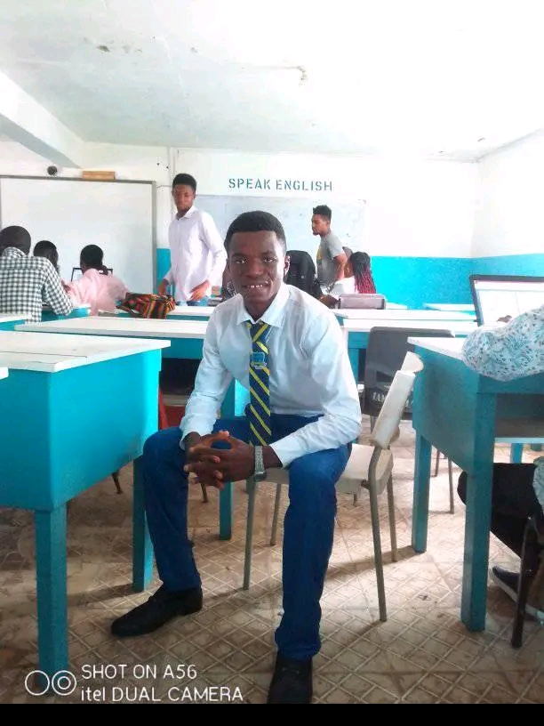

My Educational Experience
I did my primary schooling at United Methods Church{u,m,c} Calabatown freetown.
I set to my Basic certificate Examination at Peninsula Secondary School,and continue my High school their.
After my high School, I went on to do my Higher National Diploma at the University of Management and Technology{UNIMTECH}
